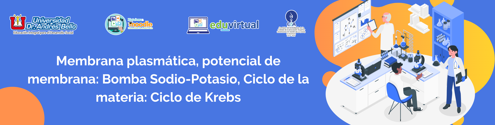
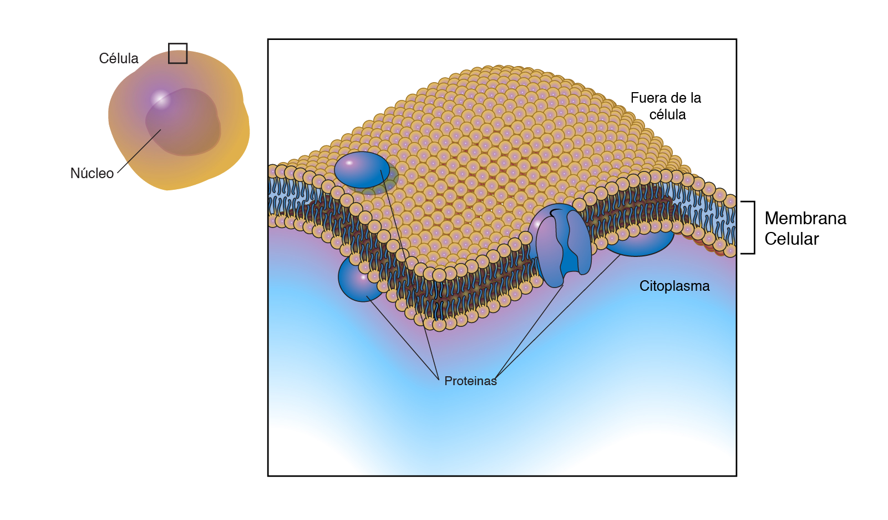
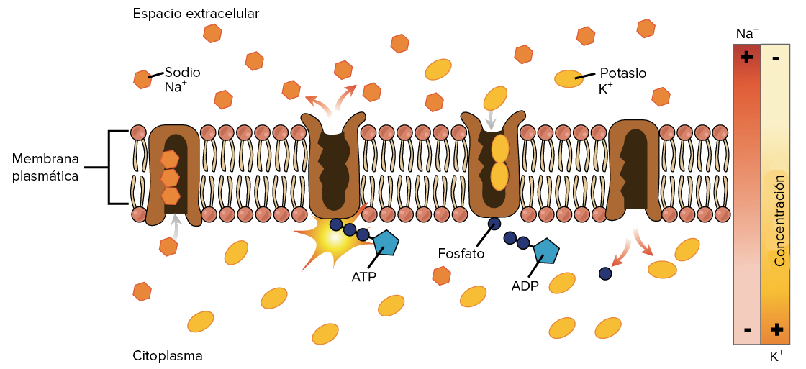
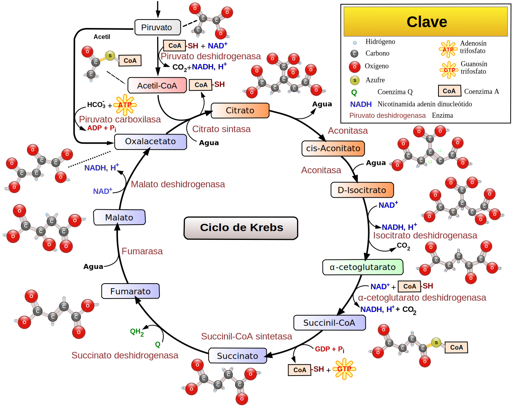

Composición del Sistema Biológico
4. Membrana plasmática, Bomba Sodio-Potasio y Ciclo de Krebs
Membrana Plasmática
Las propiedades de transporte y permeabilidad a través de las membranas celulares, implican la aparición de una distribución asimétrica de iones a uno y otro lado de la membrana y una diferencia en la composición del Líquido Extracelular (fuera de la célula) y Líquido Intracelular (interior de la célula). Esta diferencia posibilita la aparición de un gradiente de concentración o gradiente químico. Pero además se crea una diferencia de cargas eléctricas entre el interior de la célula y el fluido que la rodea, generando un gradiente eléctrico o diferencia de potencial que se denomina potencial de membrana.
Dicho de otra forma el potencial de membrana es la diferencia de potencial a ambos lados de una membrana que separa dos soluciones de diferente concentración de iones, como la membrana celular que separa el interior y el exterior de una célula. Las células animales mantienen una diferencia de potencial a través de la membrana plasmática que ronda los 90 mV, siendo el interior electronegativo con respecto al exterior.
La concentración intracelular de potasio es mucho mayor que la extracelular y lo contrario ocurre para el sodio y el cloruro. La concentración intracelular de sodio es alrededor de 5 mM mientras que la extracelular es mucho mayor (145 mM). Sin embargo, las concentraciones intra y extracelulares de potasio son 140 mM y 5 mM respectivamente. Estos gradientes están mantenidos por la bomba de sodio-potasio a expensas de la energía metabólica (ATP).
En las células animales la permeabilidad es mucho mayor para el potasio que para el sodio, lo que produce que el flujo de cargas positivas hacia el exterior de la célula sea mayor que hacia el interior de ella. Esto nos indica que hay un fuerte gradiente electroquímico que impulsa a las dos sustancias a moverse: el sodio hacia adentro y el potasio hacia afuera de la célula. Como la membrana es impermeable a estos solutos, controlando la entrada y salida de estas sustancias, la célula genera cambios de concentración de iones a ambos lados de la membrana, y como los iones tienen carga eléctrica, también se modifica el potencial.
Bomba Sodio-Potasio
La bomba sodio-potasio es una proteína integral de membrana fundamental en la fisiología de las células que se encuentra en todas nuestras membranas celulares. Su función es el transporte de los iones inorgánicos más importantes en biología (el sodio y el potasio) entre el medio extracelular y el citoplasma, proceso fundamental en todo el reino animal.

Ciclo de la Materia: Ciclo de Krebs
El ciclo de Krebs (conocido también como ciclo de los ácidos tricarboxílicos o ciclo del ácido cítrico) es un ciclo metabólico de importancia fundamental en todas las células que utilizan oxígeno durante el proceso de respiración celular.
En estos organismos aeróbicos (utilización de oxígeno), el ciclo de Krebs es el anillo donde se unen las rutas metabólicas responsables de la degradación y desasimilación de los Carbohidratos, las grasas y las proteínas en anhídrido carbónico y agua, con la formación de energía química que la célula utiliza para realizar todas sus funciones.
Este ciclo tiene lugar en las mitocondrias y consiste en una secuencia de ocho reacciones químicas consecutivas. Se encarga de transformar los carbonos de la acetil-CoA (Compuesto intermedio formado en la degradación de la mayoría de los combustibles metabólicos) en CO2 y H2O, liberando energía en forma utilizable (poder reductor y ATP).
En otras palabras, se trata de un ciclo metabólico llevado a cabo por las células que utilizan oxígeno (organismos aerobios o aeróbicos); en el cual se realiza la degradación y oxidación las grasas, proteínas y glúcidos para producir CO2, y liberar la energía necesaria para sintetizar el ATP (principal fuente de energía de los seres vivos).
Obra publicada con Licencia Creative Commons Reconocimiento Compartir igual 4.0